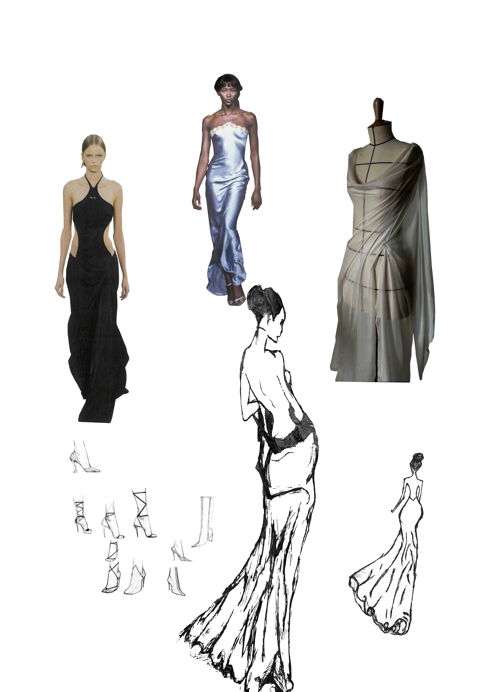

This photomontage explores the growing issue of artificial intelligence replacing creative labour within the fashion industry. As AI-generated design, automated trend forecasting, and digital garment rendering become increasingly common, there is a risk that fashion loses its human touch of emotion, imperfection and individuality that define artistic expression. In my composition, I juxtaposed polished runway imagery and a digitally rendered dress form with my own hand-drawn fashion sketches. The contrast between the smooth, hyper-real quality of the photographic elements and the raw, gestural lines of my drawings reflects the tension between automation and human creativity. By placing my sketches prominently within the montage, I aim to assert that fashion should remain rooted in imagination, craftsmanship and embodied design processes rather than being reduced to algorithmic output.
Technically, I constructed this 5”x7” composition in Adobe Photoshop using precise selections and layer masking to seamlessly combine multiple images. I used non-destructive editing techniques throughout the process, including adjustment layers such as Levels and Colour Balance, clipping masks, and Smart Objects to preserve original image quality. Layer masks allowed me to carefully isolate the runway models and dress form while refining edges with the Brush tool for subtle blending. I applied the soft light blending mode to integrate certain sketch elements with the photographic layers, creating cohesion while maintaining visible contrast between hand-drawn and digital textures. I also experimented with multiply on the sketches to deepen linework and reinforce their tactile quality. The runway images were sourced from online fashion editorials, while the fashion sketches were original drawings created by me. By combining sourced imagery with my own creative work, the montage itself mirrors the broader dialogue between technology and authorship that the piece critiques.